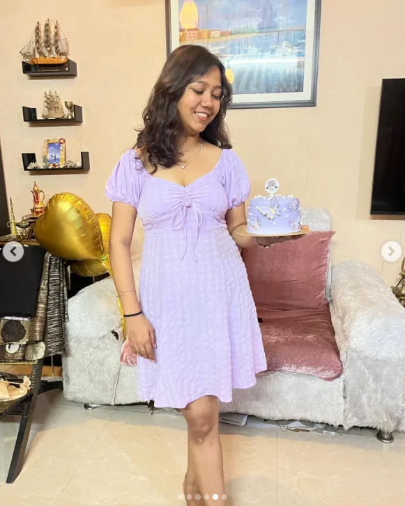

Make the thanks specific
A note can be short and still feel personal. Mention that you appreciated their company, refer to a conversation or shared moment, or thank them for helping with setup. If someone brought a gift, thank them individually without comparing gifts or focusing on their value.
Example: “Thank you for coming on Saturday. I loved catching up during dinner, and your playlist suggestion made the evening even more fun.”
Choose a format that fits
A group message may suit a casual get-together. A personal note may feel better for someone who traveled, helped host, or gave a thoughtful gift. Handwritten cards are optional; a warm, clear message matters more than the medium.
For a helper: “Thank you for staying to help with the cake table and cleanup. It made hosting much easier, and I really appreciated it.”
Share photos thoughtfully
If you send pictures, choose a small set rather than an unfiltered album. Ask before sharing identifiable photos publicly, and respect requests to remove or not post an image. A private album can help guests share their own favorite moments.
Thank-you checklist
- Send a message within a few days when practical.
- Name a real shared moment or specific help.
- Thank gift-givers individually without comparing gifts.
- Use a group note for general thanks and personal notes for special contributions.
- Get permission before posting identifiable guest photos.
Frequently asked questions
How soon should I send a thank-you?
There is no single deadline for every gathering. Within a few days is a thoughtful target; send it when you can make it clear and personal.
Do I need a handwritten card for every guest?
No. Choose a format that fits your relationship and the size of the event. Specific appreciation matters more than a formal card.
Further reading
- Being Thankful: Thank-You Note FAQs — Emily Post
- Thank You Etiquette — Georgia Tech Special Events
- Thank You Etiquette and Invitations — Sutter Health
- Thank-You Note Wording: 40 Examples for Birthdays, Showers & Weddings — Party Box
- Thank You Messages for Attending a Party: 40 Examples — Snap RSVP
- Thank You Message After an Event: 80+ Templates — Lumhe
- How to Tell If You Should Send an Email Thank You or a Handwritten Note — TIME
- The rules have changed around handwritten “thank you” cards — Axios
- January News from The Emily Post Institute
See the real moment on Instagram
This guide is inspired by Shanaya's 22nd birthday post. Follow @_itzzzshanaya for more lifestyle, fashion and dance moments, and to see what the next guide is about.

Open the birthday post on Instagram ↗Follow @_itzzzshanaya ↗ Open the birthday post ↗